This tutorial is for Processing version 2.0+. If you see any errors or have comments, please let us know.
The code for this tutorial is available here.
What is a Shader?
A new feature in Processing 2 is the inclusion of GLSL shaders. In fact, everything that Processing draws on the screen with the P2D and P3D renderers is the output of an appropriate "default shader" running behind the scenes. Processing handles these default shaders transparently so that the user doesn't need to worry about them, and she or he can continue to use the well-known drawing functions and expect the same visual results as with previous versions of Processing. However, Processing 2 incorporates a new set of functions and variables that allows advanced users to replace the default shaders with her or his own. This opens up many exciting possibilities: rendering 3D scenes using more sophisticated lighting and texturing algorithms, applying image post-processing effects in real-time, creating complex procedural objects that would be very hard or impossible to generate with other techniques, and sharing shader effects between desktop, mobile, and web platforms with minimal code changes.
In order to understand how shaders work and how they can be used to extend the drawing capabilities of Processing, it is necessary to have an overview of the key concepts of shader programming, first in general and then from the "point of view" of a Processing sketch. So, get ready and grab a beverage of your preference, because this is going to be a very long tutorial.
Answering the question alluded by the title of this section, a shader is basically a program that runs on the Graphics Processing Unit (GPU) of the computer, and generates the visual output we see on the screen given the information that defines a 2D or 3D scene: vertices, colors, textures, lights, etc. The term "shader" itself might be slightly misleading, since the word shading in the context of drawing implies the process of representing different levels of darkness on the surface of an object due to the surrounding lights in order to create the illusion of depth. The first computer shaders were mainly concerned with the synthetic calculation of these shading levels given the mathematical representation of a three-dimensional scene and the material properties of the objects in it, and attempted to create photorealistic renderings of such scenes. Nowadays, the shaders are not only used to calculate the shading or lighting levels in a virtual scene, but they are responsible of all the rendering stages, starting with camera transformations that are applied on the raw geometry, and ending at the evaluation of the final color of each visible pixel in the screen.
There are several languages that can be used to write shaders, such as Cg, HLSL and GLSL. The latter is the shader language included in OpenGL, the standard rendering library and API used across a wide variety of computing devices, ranging from high-end desktop computers to smartphones. GLSL simply stands for OpenGL Shading Language. Since Processing uses OpenGL as the basis for its P2D and P3D renderers, GLSL is the shader language that one has to use to write custom shaders to include in Processing sketches.
Writing shaders requires an understanding of the individual stages involved in the rendering a scene with the GPU, and how we can use GLSL to program them. The sequence of these stages is called the "graphical pipeline" in the technical parlance of computer graphics, and we will now take a look at the main stages in the pipeline from the perspective of a Processing sketch.
Note that the goal of this document is not to provide a programming guide to GLSL, but to describe in detail the new shader API in Processing so that users already familiar with GLSL can write their own custom shaders and then use them in Processing. There are several resources, such as online tutorials and forums, books, and coding sandboxes, that can be recommended for learning GLSL programming. Furthermore, the GLSL experience gained using a different programming interface, platform or toolkit (openFrameworks, Cinder, webGL, iOS, Android, etc.) can be easily translated over to Processing.
Let's start with a simple 3D sketch as the model to understand the relationship between the Processing functions and variables and the underlying pipeline running on the GPU. This sketch draws a quad with lights and some geometric transformations applied to it:
float angle; void setup() { size(400, 400, P3D); noStroke(); } void draw() { background(0); camera(width/2, height/2, 300, width/2, height/2, 0, 0, 1, 0); pointLight(200, 200, 200, width/2, height/2, 200); translate(width/2, height/2); rotateY(angle); beginShape(QUADS); normal(0, 0, 1); fill(50, 50, 200); vertex(-100, +100); vertex(+100, +100); fill(200, 50, 50); vertex(+100, -100); vertex(-100, -100); endShape(); angle += 0.01; } |
The image below depicts a diagram of the graphics pipeline, and how the input of the pipeline is related to the function calls in the sketch. There are several additional stages in a typical pipeline, but we don't show them here in the sake of clarity. Furthermore, Processing follows the specification set by OpenGL ES, which is the version of OpenGL used in mobile devices and, through WebGL, also in browsers. The programming model in OpenGL ES is simpler and doesn't include all the stages that are present in desktop OpenGL. On the desktop, OpenGL ES is in fact subset of OpenGL, so this choice ensures that GLSL shaders written to work with Processing can be used across different platforms with minimal changes. As a downside, advanced features of OpenGL desktop are not (directly) accessible through the Processing API, however there are several other toolkits that can be used for more sophisticated graphics programming.
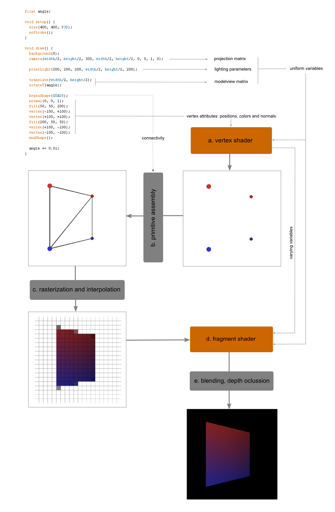
The camera, light, transformation and vertex data defined in the sketch result in two types of input for the pipeline: uniform and attribute variables. Uniform variables are those that remain constant for each vertex in the scene. The projection and modelview matrices computed from the camera and transformation setup fall in this category, since each vertex in the scene is affected by the same projection/modelview matrices. The lighting parameters (source position, color, etc) are also passed to the pipeline as uniform variables for the same reason. On the other hand, the variables that change from vertex to vertex are called attributes, and in this example we have three different type of attributes per vertex: the xyz position itself, set with the vertex() function, the color specified with fill() and the normal vector. Note that even though there is only one call to the normal() function, each vertex will have its own normal vector, which in this case will be the same across the four vertices.
The first stage in the pipeline is the vertex shader. It uses the vertex attributes (in this case positions, colors and normals), projection and modelview matrices, and light parameters in order to compute, for each vertex, what its position and color on the screen turns out to be. We can think of the vertex shader operating on one vertex at the time, and carrying out all the mathematical operations to project the vertex on the screen plane and to determine its color given the particular projection/modelview matrices and the arrangement of light sources.
The vertex shader doesn't know how the vertices are connected to each other forming a shape since it receives each vertex independently of the others. Therefore, the immediate output of the vertex stage is just the list of vertices projected onto the screen plane. In Processing we set how the vertices of a shape are connected with each other by passing an argument to beginShape(). This argument, which in the case of this example is QUADS, determines how the next stage in the pipeline, called primitive assembly, builds geometric primitives out of the individual vertices that come out of the vertex shader.
Once the primitives are determined, the next stage consists in calculating which pixels in the screen are covered by the faces of the primitives being drawn. But one problem is that the screen is a discrete grid of pixels, while the geometric data up to this point is represented as continuous numeric values. The process called "rasterization" is in charge of discretizing the vertex coordinates so they can be accurately represented on the screen at the given resolution. Another problem is that the output color has been calculated only at the input vertices so far, and it needs to be determined at the rest of the pixels that lie inside the primitives. This is solved by interpolation: the color at the center of triangle is interpolated from the colors of the three corner vertices. There are several ways of carrying out this interpolation, and the distortion introduced by the perspective needs to be accounted for as well.
The output of the rasterization and interpolation stage are the pixel positions (x,y), together with their color (and optionally other variables that can be defined in the shader, we will cover this a few paragraphs later). This information (position, color, and other per-pixel variables) is called a fragment. The fragments are processed in the next stage, called the fragment shader. In this particular example, the fragment shader doesn't do much; it only writes the color to the screen position (x, y). At this point it is useful to think of the fragment shader as operating on each fragment coming down the pipeline one at a time (in the same way we think of the vertex shader as operating on each input vertex one at a time) and then outputting the color of the fragment to the screen. As a way to see this more clearly, we could imagine the vertex shader as a "function" that is called inside the loop that runs over all the input vertices. Therefore we could write in pseudo-code:
for (int i = 0; i < vertexCount; i++) {
output = vertexShader(vertex[i]);
}
where the vertexShader function is defined as:
function vertexShader(vertex) {
projPos = projection * modelview * vertex.position;
litColor = lightColor * dot(vertex.normal, lightDirection);
return (projPos, litColor);
}
While for the fragment shader, we would have a loop over the visible, interpolated fragments:
for (int i = 0; i < fragmentCount; i++) {
screenBuffer[fragment[i].xy] = fragmentShader(fragment[i]);
}
function fragmentShader(fragment) {
return fragment.litColor;
}
Note that the litColor variable is calculated in the vertex shader, and then accessed in the fragment shader. These kind of variables that are exchanged between the vertex and the fragment shaders are called "varying". As we discussed before, the values of the varying variables are interpolated (perspective-corrected) over the fragments spanned by the vertices by the GPU hardware, so we don't need to worry about that. We can define additional varying variables, depending on the type of effect we are trying to achieve with our shaders.
The fragment shader can perform additional operations on each fragment, and in fact these could be potentially very complex. It is possible to implement a ray-tracer entirely in the fragment shader, and we will touch on this topic briefly with some more advanced examples. One important limitation of the fragment shader to keep in mind is that it cannot access fragments other than the one is currently processing (same as the vertex shader cannot access a vertex other than the one is currently operating on).
From all the stages described in our simplified pipeline, only the vertex and fragment shaders can be modified to run our own custom code. The other stages are all hard-coded in the GPU. With this picture in mind, we can move forward and start working through the actual shader API in Processing.
The PShader class
In the previous section we saw that the two programmable stages in the GPU pipeline are the vertex and fragment shaders (in recent versions of OpenGL desktop there are additional programmable stages, but they are not covered by the shader API in Processing). Both are needed in order to specify a complete, working pipeline. In Processing we have to write the GLSL code for the fragment and vertex shaders in separate files, which then are combined to form a single "shader program" than can be executed in the GPU. The word "program" is often omitted, with the implicit assumption that when we just say shader we are referring to a complete shader program involving a fragment and vertex shaders.
A shader (program) is encapsulated by the PShader class. A PShader object is created with the loadShader() function which takes the filenames of the vertex and fragment files as the arguments. If only one filename is specified, then Processing will assume that the filename corresponds to the fragment shader, and will use a default vertex shader. Code listing 2 shows a sketch loading and using a shader that renders lights using discrete shading levels.
PShader toon; void setup() { size(640, 360, P3D); noStroke(); fill(204); toon = loadShader("ToonFrag.glsl", "ToonVert.glsl"); toon.set("fraction", 1.0); } void draw() { shader(toon); background(0); float dirY = (mouseY / float(height) - 0.5) * 2; float dirX = (mouseX / float(width) - 0.5) * 2; directionalLight(204, 204, 204, -dirX, -dirY, -1); translate(width/2, height/2); sphere(120); } ToonVert.glsl: uniform mat4 transform; uniform mat3 normalMatrix; uniform vec3 lightNormal; attribute vec4 vertex; attribute vec4 color; attribute vec3 normal; varying vec4 vertColor; varying vec3 vertNormal; varying vec3 vertLightDir; void main() { gl_Position = transform * vertex; vertColor = color; vertNormal = normalize(normalMatrix * normal); vertLightDir = -lightNormal; } ToonFrag.glsl: #ifdef GL_ES precision mediump float; precision mediump int; #endif #define PROCESSING_LIGHT_SHADER uniform float fraction; varying vec4 vertColor; varying vec3 vertNormal; varying vec3 vertLightDir; void main() { float intensity; vec4 color; intensity = max(0.0, dot(vertLightDir, vertNormal)); if (intensity > pow(0.95, fraction)) { color = vec4(vec3(1.0), 1.0); } else if (intensity > pow(0.5, fraction)) { color = vec4(vec3(0.6), 1.0); } else if (intensity > pow(0.25, fraction)) { color = vec4(vec3(0.4), 1.0); } else { color = vec4(vec3(0.2), 1.0); } gl_FragColor = color * vertColor; } |
The ifdef section in the fragment shader is required to make the shader compatible with OpenGL ES and WebGL. It sets the precision of the float and integer numbers to medium, which should be fine for most devices. These precision statements are optional on the desktop. There is also a #define line declaring the PROCESSING_LIGHT_SHADER symbol. This define is used by Processing to determine the type of shader, and whether or not it is valid to render the geometry in the sketch. This topic will be explain in detail in the next section.
There are three varying variables shared between the fragment and vertex shaders, vertColor, vertNormal and vertLightDir, which are used to do the lighting calculation per-pixel, instead of per-vertex, which is the default. We will see an detailed example about per-pixel lighting later on in this tutorial. The gl_Position variable in the vertex shader is a GLSL built-in variable used to store the output vertex position, while gl_FragColor is the corresponding built-in variable to store the color output for each fragment. The value of gl_FragColor continues down the pipeline through the (non-programmable) stages of alpha blending and depth occlusion in order to compute the final color on the screen.
The PShader class includes the set() function to pass values from the sketch to the uniform variables in the fragment or vertex shaders. As discussed earlier, the uniform variables remain constant for each vertex in the scene, so they need to be set only once for the whole shape or shapes being rendered. Some uniform variables are automatically set by Processing, such as transform, normalMatrix and lightNormal. The next section describes in detail the names of uniform and attribute variables that are automatically set by the Processing renderers.
Types of shaders in Processing
From the code and pseudo-code examples presented in the previous sections, it can be appreciated that different shaders have different uniform and attribute variables. Clearly, a shader that does not compute lighting does not need uniforms holding the light source's position and color, for example. If we work with a low-level toolkit in C or C++ with direct access to the OpenGL API, we are free to name the uniforms and attributes of a shader in any way we like, since we have absolute control on the way the geometry is stored in our application, and how and when it is passed over to the GPU pipeline using the OpenGL functions. This is different when working in Processing, since the shaders are handled automatically by the renderers and should be able to handle the geometry that is described with the drawing API of Processing. This doesn't imply that custom shaders must render things in the same way as Processing does by default, quite in the contrary, the use of custom shaders opens up the possibility of greatly altering the rendering pipeline in Processing. However, custom shaders meant to be used in conjunction with the standard drawing API have to follow certain naming conventions, and are bound by some limitations.
Depending on whether a scene has strokes (lines or points), or it uses textures and/or lights, then the shader to be used under those circumstances must present a specific set of uniform and attribute variables that will allow Processing to interface with the shader and send the appropriate data to it.
Based on this uniform and attribute requirements, shaders in Processing must belong to one of 6 different types. These 6 types can be grouped in 3 classes:
- POINT shaders: used to render stroke points.
- LINE shaders: used to render stroke lines.
- TRIANGLE shaders: used to render anything else, which means that they will handle (lit/unlit, textured/non-textured) shapes. Because all shapes in Processing are ultimately made out of triangles, they are can be called TRIANGLE shaders.
When setting a shader with the shader() function, if no type argument is specified then the shader will be assumed to be a triangle shader:
void draw() { shader(pointShader, POINTS); shader(lineShader, LINES); shader(polyShader); // same as shader(polyShader, TRIANGLE); stroke(255); beginShape(POLYGON); ... }
This code will result in Processing using pointShader to render stroke points, lineShader to render lines, and polyShader to render triangles (anything else).
The point and line shaders are relevant only when using the P3D renderer. The rendering of points and lines in three dimensions is very different from that of regular geometry because they need to be always facing the screen. This requires a different transformation math in the vertex shader. By contrast, all geometry in two dimensions, including lines and points, are rendered as regular triangles since it is contained in a single plane parallel to the screen.
However, there are different types of triangle shaders because of the use of lights and textures. There are in fact 4 different situations when rendering regular, non-stroked geometry:
- there are no lights and no textures
- there are lights but no textures
- there are textures but no lights
- there are both textures and lights
As mentioned earlier, a shader for rendering lit geometry requires additional attributes and uniform variables to be sent from Processing that are not needed by a shader that only renders flat-colored geometry without lights or textures. Similarly, a shader for rendering textured polygons needs its own uniforms and attributes (texture sampler and texture coordinates) that would not be required otherwise. Although it could have been possible to have a generic shader in Processing that takes care of all different rendering scenarios, this would be very inefficient because of all the branching that should take place inside the shaders to choose the appropriate rendering path. In general, GPUs are not very efficient at handling branches in their shaders, particularly those available on mobile devices.
In consequence, the triangle shaders are further discriminated in 4 types:
- COLOR: render geometry with no lights and no textures
- LIGHT: render geometry with lights but no textures
- TEXTURE: render geometry with textures but no lights
- TEXLIGHT: render geometry with textures and lights
Together with the POINT and LINE shaders mentioned earlier, we end up having 6 different types of shaders in Processing.
Processing needs to use the right type of shader when drawing a piece of geometry, and by default it picks the correct shader by checking whether the geometry about to be rendered has lights or textures associated to it and then enabling the appropriate shader. When we set our own custom shader, we need to make sure that it belongs to the correct type to handle the subsequent drawing calls. For example, if simpleShader below is of type COLOR, then the following code will run without problems:
shader(simpleShader); noLights(); fill(180); rect(0, 0, 100, 100);
However, if we try to do:
shader(simpleShader); lights(); fill(180); rect(0, 0, 100, 100);
then Processing will print the warning "Your shader cannot be used to render lit geometry, using default shader instead.", but will still render the lit geometry by using its own default LIGHT shader instead the one provided in the shader() call.
The type of a shader must be specified inside the GLSL code, either in the vertex shader or the fragment shader (or both), by using a #define line, which are the following:
- #define PROCESSING_POINT_SHADER for POINT shaders
- #define PROCESSING_LINE_SHADER for LINE shaders
- #define PROCESSING_COLOR_SHADER for COLOR shaders
- #define PROCESSING_LIGHT_SHADER for LIGHT shaders
- #define PROCESSING_TEXTURE_SHADER for TEXTURE shaders
- #define PROCESSING_TEXLIGHT_SHADER for TEXLIGHT shaders
In the next sections we will describe each type of shader in detail.
Color shaders
We will go through the different types of shaders available in Processing and examine examples for each one. For the color, light, texture and texlight shaders we will use the same base geometry, a cylinder, throughout all the examples. The next code will serve as the basis for all the subsequent sketches:
PShape can; float angle; PShader colorShader; void setup() { size(640, 360, P3D); can = createCan(100, 200, 32); } void draw() { background(0); translate(width/2, height/2); rotateY(angle); shape(can); angle += 0.01; } PShape createCan(float r, float h, int detail) { textureMode(NORMAL); PShape sh = createShape(); sh.beginShape(QUAD_STRIP); sh.noStroke(); for (int i = 0; i <= detail; i++) { float angle = TWO_PI / detail; float x = sin(i * angle); float z = cos(i * angle); float u = float(i) / detail; sh.normal(x, 0, z); sh.vertex(x * r, -h/2, z * r, u, 0); sh.vertex(x * r, +h/2, z * r, u, 1); } sh.endShape(); return sh; } |
The output should be a just flat-colored white cylinder rotating around the Y axis. So let's write our first shader to render this cylinder in more interesting ways!
First, save the code in listing 1 and add the following two files in the data folder:
colorvert.glsl:
#define PROCESSING_COLOR_SHADER
uniform mat4 transform;
attribute vec4 vertex;
attribute vec4 color;
varying vec4 vertColor;
void main() {
gl_Position = transform * vertex;
vertColor = color;
}
colorfrag.glsl:
#ifdef GL_ES
precision mediump float;
precision mediump int;
#endif
varying vec4 vertColor;
void main() {
gl_FragColor = vertColor;
}
|
The type of shader is indicated here with the define in the vertex shader, but it could also be in the fragment shader. In this example, there is only one uniform variable, transform, which is a 4x4 matrix holding the product of the projection and the modelview matrices. The multiplication of a vertex in world coordinates by the transform matrix gives the clip coordinates. The vertex and color attributes hold the position and color of the input vertex, respectively. The input color is copied without any modification to the vertColor varying, which passes the value down to the fragment shader. The fragment shader is nothing more than a pass-through shader since the color is sent to the output without any further modifications. The uniform transform and the attributes vertex and color are automatically set by Processing.
We can do some simple color manipulation by doing the following change in the fragment shader:
gl_FragColor = vec4(vec3(1) - vertColor.xyz, 1);
This will show on the screen the invert of the input color. So for instance, if we add sh.fill(255, 255, 0) right after sh.beginShape(QUAD_STRIP)> then the cylinder should be painted blue.
Texture shaders
Rendering textured geometry requires additional uniforms and attributes in the shader. Let's look at the following sketch together with the accompanying fragment and vertex shaders:
PImage label; PShape can; float angle; PShader texShader; void setup() { size(640, 360, P3D); label = loadImage("lachoy.jpg"); can = createCan(100, 200, 32, label); texShader = loadShader("texfrag.glsl", "texvert.glsl"); } void draw() { background(0); shader(texShader); translate(width/2, height/2); rotateY(angle); shape(can); angle += 0.01; } PShape createCan(float r, float h, int detail, PImage tex) { textureMode(NORMAL); PShape sh = createShape(); sh.beginShape(QUAD_STRIP); sh.noStroke(); sh.texture(tex); for (int i = 0; i <= detail; i++) { float angle = TWO_PI / detail; float x = sin(i * angle); float z = cos(i * angle); float u = float(i) / detail; sh.normal(x, 0, z); sh.vertex(x * r, -h/2, z * r, u, 0); sh.vertex(x * r, +h/2, z * r, u, 1); } sh.endShape(); return sh; } texvert.glsl: #define PROCESSING_TEXTURE_SHADER uniform mat4 transform; uniform mat4 texMatrix; attribute vec4 vertex; attribute vec4 color; attribute vec2 texCoord; varying vec4 vertColor; varying vec4 vertTexCoord; void main() { gl_Position = transform * vertex; vertColor = color; vertTexCoord = texMatrix * vec4(texCoord, 1.0, 1.0); } texfrag.glsl: #ifdef GL_ES precision mediump float; precision mediump int; #endif uniform sampler2D texture; varying vec4 vertColor; varying vec4 vertTexCoord; void main() { gl_FragColor = texture2D(texture, vertTexCoord.st) * vertColor; } |
There is a new uniform in the vertex shader called texMatrix, which rescales the texture coordinates for each vertex (passed in the additional attribute texCoord), to take into account texture inversion along the Y-axis (as Processing's vertical axis is inverted with respect to OpenGL's), and non-power-of-two textures (a texture coordinate value of 1.0 for a NPOT texture will be rescaled to a smaller value that covers the NPOT range). In the fragment shader, we have a new uniform variable of type sampler2D, texture, which basically represents a pointer to the texture data,with the added capacity of sampling it at arbitrary texture coordinates (i.e: not necessarily at the center of a texel). Depending on the sampling configuration of the texture (linear, bilinear, etc.), a different interpolation algorithm will be used by the GPU. The result of this sketch is shown in the next figure:

Implementing a pixelate effect becomes very easy at the level of the fragment shader. All we need to do is to modify the texture coordinate values, vertTexCoord.st, so that they are binned within a given number of cells, in this case 50:
void main() {
int si = int(vertTexCoord.s * 50.0);
int sj = int(vertTexCoord.t * 50.0);
gl_FragColor = texture2D(texture, vec2(float(si) / 50.0, float(sj) / 50.0)) * vertColor;
}
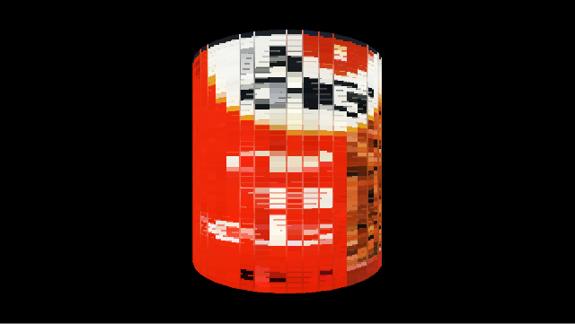
A final note about texture shaders is that they are used to render text as well. The reason for this is that the P2D/P3D renderers in Processing draw text as textured quads, which are handled by the texture shaders.
Light shaders
Lighting a 3D scene involves placing one or more light sources in the space, and defining their parameters, such as type (point, spotlight) and color (diffuse, ambient, specular) . We won't go into the details of lighting in OpenGL, but something important to mention here is that all the mathematical models we use to generate lights with GLSL shaders are very simple approximations to lighting in the real world. The model we will use in the following example is probably one of the simplest, and evaluates the light intensity at each vertex of the object, and then uses the built-in interpolation of the graphic pipeline to get a continuous gradient of color across the object faces. The light intensity at each vertex is computed as the dot product between the vertex normal and the direction vector between the vertex and light positions. This model represents a point light source that emits light equally in all directions:
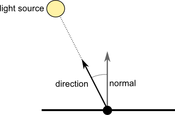
Using the same geometry from the previous examples, we can now write a simple shader to render the scene with a single point light. In order to do so, we need some extra uniform variables in the vertex shader: lightPosition, which holds the position of the light source, and normalMatrix, which is a 4x4 matrix to convert the normal vector to the appropriate coordinates to perform the lighting calculations.
PShape can; float angle; PShader lightShader; void setup() { size(640, 360, P3D); can = createCan(100, 200, 32); lightShader = loadShader("lightfrag.glsl", "lightvert.glsl"); } void draw() { background(0); shader(lightShader); pointLight(255, 255, 255, width/2, height, 200); translate(width/2, height/2); rotateY(angle); shape(can); angle += 0.01; } lightvert.glsl: #define PROCESSING_LIGHT_SHADER uniform mat4 modelview; uniform mat4 transform; uniform mat3 normalMatrix; uniform vec4 lightPosition; attribute vec4 vertex; attribute vec4 color; attribute vec3 normal; varying vec4 vertColor; void main() { gl_Position = transform * vertex; vec3 ecVertex = vec3(modelview * vertex); vec3 ecNormal = normalize(normalMatrix * normal); vec3 direction = normalize(lightPosition.xyz - ecVertex); float intensity = max(0.0, dot(direction, ecNormal)); vertColor = vec4(intensity, intensity, intensity, 1) * color; } lightfrag.glsl: #ifdef GL_ES precision mediump float; precision mediump int; #endif varying vec4 vertColor; void main() { gl_FragColor = vertColor; } |
In the vertex shader, the ecVertex variable is the position of the input vertex expressed in eye-coordinates, since it is obtained by multiplying vertex by the modelview matrix. Similarly, multiplying the input normal vector by the normalMatrix yields its coordinates in the eye-system. Once all the vectors are expressed in the same coordinate system, they can be used to calculate the intensity of the incident light at the current vector. From the formula used in the shader, the intensity is directly proportional to the angle between the normal and the vector between the vertex and the light source.
In this example, there is a single point light, but Processing can send to the shader up to 8 different lights and their associated parameters. The full list of light uniforms that can be used to get this information in the shader are the following:
- uniform int lightCount: number of active lights
- uniform vec4 lightPosition[8]: position of each light
- uniform vec3 lightNormal[8]: direction of each light (only relevant for directional and spot lights)
- uniform vec3 lightAmbient[8]: ambient component of light color
- uniform vec3 lightDiffuse[8]: diffuse component of light color
- uniform vec3 lightSpecular[8]: specular component of light color
- uniform vec3 lightFalloff[8]: light falloff coefficients
- uniform vec2 lightSpot[8]: light spot parameters (cosine of light spot angle and concentration)
The values in this uniforms completely specify any lighting configuration set in the sketch using the ambientLight(), pointLight(), directionalLight() and spotLight() functions in Processing. To see how all these uniforms are used in the default light shader, which covers all the possible lighting combinations, take a look at its source code from the Processing core. However, a valid light shader doesn't need to declare all of these uniforms, for example in the previous example we only needed the lightPosition uniform.
As it was discussed at the beginning, the possibility of setting custom shaders allow us to change the default rendering algorithms for ones that are more sophisticated or generate specific visual styles. For example, we can make lights look better by replacing the above model, which is vertex-based, by a more accurate per-pixel lighting calculation. The idea is to interpolate the normal and direction vectors instead of the final color of the vertex, and then calculate the intensity value at each fragment by using the normal and direction passed from the vertex shader with varying variables.
pixlightvert.glsl:
#define PROCESSING_LIGHT_SHADER
uniform mat4 modelview;
uniform mat4 transform;
uniform mat3 normalMatrix;
uniform vec4 lightPosition;
uniform vec3 lightNormal;
attribute vec4 vertex;
attribute vec4 color;
attribute vec3 normal;
varying vec4 vertColor;
varying vec3 ecNormal;
varying vec3 lightDir;
void main() {
gl_Position = transform * vertex;
vec3 ecVertex = vec3(modelview * vertex);
ecNormal = normalize(normalMatrix * normal);
lightDir = normalize(lightPosition.xyz - ecVertex);
vertColor = color;
}
pixlightfrag.glsl:
#ifdef GL_ES
precision mediump float;
precision mediump int;
#endif
varying vec4 vertColor;
varying vec3 ecNormal;
varying vec3 lightDir;
void main() {
vec3 direction = normalize(lightDir);
vec3 normal = normalize(ecNormal);
float intensity = max(0.0, dot(direction, normal));
gl_FragColor = vec4(intensity, intensity, intensity, 1) * vertColor;
}
|
The output of the per-vertex and per-pixel lighting algorithms can be compared in the two next figures, where the first corresponds to per-vertex lighting, and the second to per-pixel. The (linear) interpolation of the color values across the vertices of each face of the object result in noticeable changes in light levels across the faces edges. By interpolating the vectors instead, the changes are much more smoother.
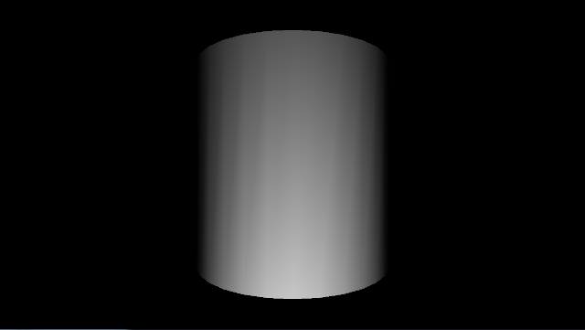
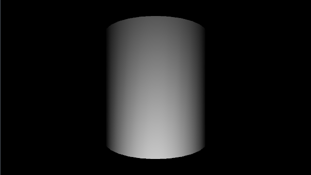
Texture-light shaders
The final type of triangle shaders is the texture-light (texlight) shader. This type of shader incorporates the uniforms from both the light and texture types.
We can integrate the examples from the previous sections in the following sketch:
PImage label; PShape can; float angle; PShader texlightShader; void setup() { size(640, 360, P3D); label = loadImage("lachoy.jpg"); can = createCan(100, 200, 32, label); texlightShader = loadShader("texlightfrag.glsl", "texlightvert.glsl"); } void draw() { background(0); shader(texlightShader); pointLight(255, 255, 255, width/2, height, 200); translate(width/2, height/2); rotateY(angle); shape(can); angle += 0.01; } texlightvert.glsl: #define PROCESSING_TEXLIGHT_SHADER uniform mat4 modelview; uniform mat4 transform; uniform mat3 normalMatrix; uniform mat4 texMatrix; uniform vec4 lightPosition; attribute vec4 vertex; attribute vec4 color; attribute vec3 normal; attribute vec2 texCoord; varying vec4 vertColor; varying vec4 vertTexCoord; void main() { gl_Position = transform * vertex; vec3 ecVertex = vec3(modelview * vertex); vec3 ecNormal = normalize(normalMatrix * normal); vec3 direction = normalize(lightPosition.xyz - ecVertex); float intensity = max(0.0, dot(direction, ecNormal)); vertColor = vec4(intensity, intensity, intensity, 1) * color; vertTexCoord = texMatrix * vec4(texCoord, 1.0, 1.0); } texlightfrag.glsl: #ifdef GL_ES precision mediump float; precision mediump int; #endif uniform sampler2D texture; varying vec4 vertColor; varying vec4 vertTexCoord; void main() { gl_FragColor = texture2D(texture, vertTexCoord.st) * vertColor; } |
The lighting can be also done on a per-pixel basis, in which case we need to use the following shaders:
pixlightxvert.glsl:
#define PROCESSING_TEXLIGHT_SHADER
uniform mat4 modelview;
uniform mat4 transform;
uniform mat3 normalMatrix;
uniform mat4 texMatrix;
uniform vec4 lightPosition;
attribute vec4 vertex;
attribute vec4 color;
attribute vec3 normal;
attribute vec2 texCoord;
varying vec4 vertColor;
varying vec3 ecNormal;
varying vec3 lightDir;
varying vec4 vertTexCoord;
void main() {
gl_Position = transform * vertex;
vec3 ecVertex = vec3(modelview * vertex);
ecNormal = normalize(normalMatrix * normal);
lightDir = normalize(lightPosition.xyz - ecVertex);
vertColor = color;
vertTexCoord = texMatrix * vec4(texCoord, 1.0, 1.0);
}
pixlightxfrag.glsl:
#ifdef GL_ES
precision mediump float;
precision mediump int;
#endif
uniform sampler2D texture;
varying vec4 vertColor;
varying vec3 ecNormal;
varying vec3 lightDir;
varying vec4 vertTexCoord;
void main() {
vec3 direction = normalize(lightDir);
vec3 normal = normalize(ecNormal);
float intensity = max(0.0, dot(direction, normal));
vec4 tintColor = vec4(intensity, intensity, intensity, 1) * vertColor;
gl_FragColor = texture2D(texture, vertTexCoord.st) * tintColor;
}
|
Note that a texlight cannot be used to render a scene only with textures or only with lights, in those cases either a texture of light shader will be needed.
Image post-processing effects
The fragment shader can be used to run image post-processing effects very efficiently, by taking advantage of the parallel nature of the GPUs. For example, let's imagine that we want to render a texture using only black and white: black if the luminance at a given pixel in the image is below a certain threshold, and white if it is above. This can be implemented easily in the fragment shader with the following code:
#ifdef GL_ES
precision mediump float;
precision mediump int;
#endif
#define PROCESSING_TEXTURE_SHADER
uniform sampler2D texture;
varying vec4 vertColor;
varying vec4 vertTexCoord;
const vec4 lumcoeff = vec4(0.299, 0.587, 0.114, 0);
void main() {
vec4 col = texture2D(texture, vertTexCoord.st);
float lum = dot(col, lumcoeff);
if (0.5 < lum) {
gl_FragColor = vertColor;
} else {
gl_FragColor = vec4(0, 0, 0, 1);
}
}
The fragment shader samples the texture at position vertTexCoord.st and uses the color value to compute the luminance and then the two alternative outputs based on the threshold, which in this case is 0.5. We can use this shader with the textured object from the earlier examples:
PImage label; PShape can; float angle; PShader bwShader; void setup() { size(640, 360, P3D); label = loadImage("lachoy.jpg"); can = createCan(100, 200, 32, label); bwShader = loadShader("bwfrag.glsl"); } void draw() { background(0); shader(bwShader); translate(width/2, height/2); rotateY(angle); shape(can); angle += 0.01; } |
You will notice that this time the loadShader() function only receives the filename of the fragment shader. Because the GLSL code contains the #define PROCESSING_TEXTURE_SHADER line, Processing will know that we are providing the fragment stage of a texture shader. How does it complete the entire shader program? The answer is that it uses the default vertex stage for texture shaders. As a consequence of this, and since the varying variables are first declared in the vertex stage, the fragment shader has to follow the varying names adopted in the default shader. In this case, the varying variables for the fragment color and texture coordinate must be named vertColor and vertTexCoord, respectively.
Convolution filters are also possible to implement in the fragment shader. Given the texture coordinates of a fragment, vertTexCoord, the neighboring pixels in the texture (also called "texels") can be sampled using the texOffset uniform. This uniform is set automatically by Processing and contains the vector (1/width, 1/height), with width and height being the resolution of the texture. These values are precisely the offsets along the horizontal and vertical directions needed to sample the color from the texels around vertTexCoord.st. For example, vertTexCoord.st + vec2(texOffset.s, 0) is the texel exactly one position to the right. The following GLSL codes shows the implementation of a standard edge detection and emboss filters:
#ifdef GL_ES
precision mediump float;
precision mediump int;
#endif
#define PROCESSING_TEXTURE_SHADER
uniform sampler2D texture;
uniform vec2 texOffset;
varying vec4 vertColor;
varying vec4 vertTexCoord;
const vec4 lumcoeff = vec4(0.299, 0.587, 0.114, 0);
void main() {
vec2 tc0 = vertTexCoord.st + vec2(-texOffset.s, -texOffset.t);
vec2 tc1 = vertTexCoord.st + vec2( 0.0, -texOffset.t);
vec2 tc2 = vertTexCoord.st + vec2(+texOffset.s, -texOffset.t);
vec2 tc3 = vertTexCoord.st + vec2(-texOffset.s, 0.0);
vec2 tc4 = vertTexCoord.st + vec2( 0.0, 0.0);
vec2 tc5 = vertTexCoord.st + vec2(+texOffset.s, 0.0);
vec2 tc6 = vertTexCoord.st + vec2(-texOffset.s, +texOffset.t);
vec2 tc7 = vertTexCoord.st + vec2( 0.0, +texOffset.t);
vec2 tc8 = vertTexCoord.st + vec2(+texOffset.s, +texOffset.t);
vec4 col0 = texture2D(texture, tc0);
vec4 col1 = texture2D(texture, tc1);
vec4 col2 = texture2D(texture, tc2);
vec4 col3 = texture2D(texture, tc3);
vec4 col4 = texture2D(texture, tc4);
vec4 col5 = texture2D(texture, tc5);
vec4 col6 = texture2D(texture, tc6);
vec4 col7 = texture2D(texture, tc7);
vec4 col8 = texture2D(texture, tc8);
vec4 sum = 8.0 * col4 - (col0 + col1 + col2 + col3 + col5 + col6 + col7 + col8);
gl_FragColor = vec4(sum.rgb, 1.0) * vertColor;
}
|
#ifdef GL_ES
precision mediump float;
precision mediump int;
#endif
#define PROCESSING_TEXTURE_SHADER
uniform sampler2D texture;
uniform vec2 texOffset;
varying vec4 vertColor;
varying vec4 vertTexCoord;
const vec4 lumcoeff = vec4(0.299, 0.587, 0.114, 0);
void main() {
vec2 tc0 = vertTexCoord.st + vec2(-texOffset.s, -texOffset.t);
vec2 tc1 = vertTexCoord.st + vec2( 0.0, -texOffset.t);
vec2 tc2 = vertTexCoord.st + vec2(-texOffset.s, 0.0);
vec2 tc3 = vertTexCoord.st + vec2(+texOffset.s, 0.0);
vec2 tc4 = vertTexCoord.st + vec2( 0.0, +texOffset.t);
vec2 tc5 = vertTexCoord.st + vec2(+texOffset.s, +texOffset.t);
vec4 col0 = texture2D(texture, tc0);
vec4 col1 = texture2D(texture, tc1);
vec4 col2 = texture2D(texture, tc2);
vec4 col3 = texture2D(texture, tc3);
vec4 col4 = texture2D(texture, tc4);
vec4 col5 = texture2D(texture, tc5);
vec4 sum = vec4(0.5) + (col0 + col1 + col2) - (col3 + col4 + col5);
float lum = dot(sum, lumcoeff);
gl_FragColor = vec4(lum, lum, lum, 1.0) * vertColor;
}
|
The output of these post-processing effects are displayed in the following images (b&w, edge and emboss from top to bottom):
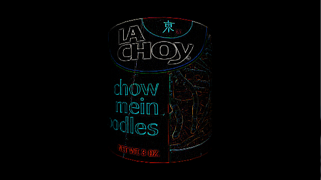

Putting all together
In all of the examples we have seen so far, only one shader is used throughout the execution of the entire sketch. However, we can load and use as many shaders as we need. At each given time, one shader will be selected and running, but we can change the selected shader using the shader() function, and restore the default shaders with resetShader(). The following example combines all the shaders from the previous sections, so the can be enabled/disabled using the keyboard:
float canSize = 60; PImage label; PShape can; PShape cap; float angle; PShader selShader; boolean useLight; boolean useTexture; PShader colorShader; PShader lightShader; PShader texShader; PShader texlightShader; PShader pixlightShader; PShader texlightxShader; PShader bwShader; PShader edgesShader; PShader embossShader; void setup() { size(480, 480, P3D); label = loadImage("lachoy.jpg"); can = createCan(canSize, 2 * canSize, 32, label); cap = createCap(canSize, 32); colorShader = loadShader("colorfrag.glsl", "colorvert.glsl"); lightShader = loadShader("lightfrag.glsl", "lightvert.glsl"); texShader = loadShader("texfrag.glsl", "texvert.glsl"); texlightShader = loadShader("texlightfrag.glsl", "texlightvert.glsl"); pixlightShader = loadShader("pixlightfrag.glsl", "pixlightvert.glsl"); texlightxShader = loadShader("pixlightxfrag.glsl", "pixlightxvert.glsl"); bwShader = loadShader("bwfrag.glsl"); edgesShader = loadShader("edgesfrag.glsl"); embossShader = loadShader("embossfrag.glsl"); selShader = texlightShader; useLight = true; useTexture = true; println("Vertex lights, texture shading"); } void draw() { background(0); float x = 1.88 * canSize; float y = 2 * canSize; int n = 0; for (int i = 0; i < 3; i++) { for (int j = 0; j < 3; j++) { drawCan(x, y, angle); x += 2 * canSize + 8; n++; } x = 1.88 * canSize; y += 2 * canSize + 5; } angle += 0.01; } void drawCan( float centerx, float centery, float rotAngle) { pushMatrix(); if (useLight) { pointLight(255, 255, 255, centerx, centery, 200); } shader(selShader); translate(centerx, centery, 65); rotateY(rotAngle); if (useTexture) { can.setTexture(label); } else { can.setTexture(null); } shape(can); noLights(); resetShader(); pushMatrix(); translate(0, canSize - 5, 0); shape(cap); popMatrix(); pushMatrix(); translate(0, -canSize + 5, 0); shape(cap); popMatrix(); popMatrix(); } PShape createCan(float r, float h, int detail, PImage tex) { textureMode(NORMAL); PShape sh = createShape(); sh.beginShape(QUAD_STRIP); sh.noStroke(); sh.texture(tex); for (int i = 0; i <= detail; i++) { float angle = TWO_PI / detail; float x = sin(i * angle); float z = cos(i * angle); float u = float(i) / detail; sh.normal(x, 0, z); sh.vertex(x * r, -h/2, z * r, u, 0); sh.vertex(x * r, +h/2, z * r, u, 1); } sh.endShape(); return sh; } PShape createCap(float r, int detail) { PShape sh = createShape(); sh.beginShape(TRIANGLE_FAN); sh.noStroke(); sh.fill(128); sh.vertex(0, 0, 0); for (int i = 0; i <= detail; i++) { float angle = TWO_PI / detail; float x = sin(i * angle); float z = cos(i * angle); sh.vertex(x * r, 0, z * r); } sh.endShape(); return sh; } void keyPressed() { if (key == '1') { println("No lights, no texture shading"); selShader = colorShader; useLight = false; useTexture = false; } else if (key == '2') { println("Vertex lights, no texture shading"); selShader = lightShader; useLight = true; useTexture = false; } else if (key == '3') { println("No lights, texture shading"); selShader = texShader; useLight = false; useTexture = true; } else if (key == '4') { println("Vertex lights, texture shading"); selShader = texlightShader; useLight = true; useTexture = true; } else if (key == '5') { println("Pixel lights, no texture shading"); selShader = pixlightShader; useLight = true; useTexture = false; } else if (key == '6') { println("Pixel lights, texture shading"); selShader = texlightxShader; useLight = true; useTexture = true; } else if (key == '7') { println("Black&white texture filtering"); selShader = bwShader; useLight = false; useTexture = true; } else if (key == '8') { println("Edge detection filtering"); selShader = edgesShader; useLight = false; useTexture = true; } else if (key == '9') { println("Emboss filtering"); selShader = embossShader; useLight = false; useTexture = true; } } |
And one of its possible outputs:
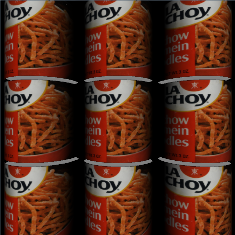
Note that the caps of the can cylinders are not affected by any of the custom shaders, since they are drawn after the resetShader() call. The cap model is not textured, and the lights are also disabled, this means that Processing will use its default color shader to render the caps.
10. Point and line shaders
The point and line shaders are only used by the P3D renderer in order to draw stroke geometry. The reason is that the stroke geometry is always screen-facing in 3D, so it needs a different projection calculation in the vertex stage. In P2D, all the geometry is contained in the same plane, so there is no need of special handling for stroke lines and points (everything is just rendered as triangles with an orthographic projection).
The technique of rendering screen-facing polygons is called "billboarding" and has been widely used in games to create the illusion of a 3D objects by using 2D images that always face the camera (image from the lighthouse3D tutorial on billboarding):
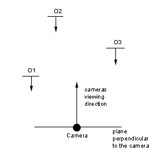
In terms of GLSL code, the basic idea of (screen-facing) billboards can be seen in the following line:
gl_Position = transform * center + projection * vec4(offset, 0, 0);
The variable center represents the central position of the billboard, and offset is the (2D) displacement from the center point to the edge vertices. Because the offset is not transformed with the modelview matrix (geometric transformations and camera placement), it results in the translations applied along the screen plane because of the projection transformation.
Let's start with point rendering. P3D represents points as either rectangles (when the stroke cap is set to SQUARE) or regular polygons of n sides (stroke cap set to ROUND). The number of sides is adjusted dynamically depending on the size of the point, in order to ensure that looks similar enough to a true circle. The following sketch demonstrates a simple point rendering shader:
PShader pointShader; void setup() { size(640, 360, P3D); pointShader = loadShader("pointfrag.glsl", "pointvert.glsl"); stroke(255); strokeWeight(50); background(0); } void draw() { shader(pointShader, POINTS); if (mousePressed) { point(mouseX, mouseY); } } pointfrag.glsl: #define PROCESSING_POINT_SHADER uniform mat4 projection; uniform mat4 modelview; attribute vec4 vertex; attribute vec4 color; attribute vec2 offset; varying vec4 vertColor; void main() { vec4 pos = modelview * vertex; vec4 clip = projection * pos; gl_Position = clip + projection * vec4(offset, 0, 0); vertColor = color; } pointvert.glsl: #ifdef GL_ES precision mediump float; precision mediump int; #endif varying vec4 vertColor; void main() { gl_FragColor = vertColor; } |
The attribute offset contains the displacement that needs to be applied from the center of the point to generate all the boundary vertices. For a square point, the P3D renderer sends 5 vertices to the vertex shader, all of them coincident with the center of the point. The first vertex has (0, 0) in its offset attribute, so it remains at the center of the point, while the other vertices have the appropriate offset to move them to the corners of the square, as indicated in the figure below:
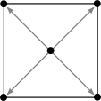
The default point shader doesn't allow to apply any texturing to the points, but this limitation can be circumvented with a custom shader with an additional uniform for the texture sampler. Let's see in the next example how we can use this trick to create a shader that renders textured point sprites.
PShader pointShader; PImage cloud1; PImage cloud2; PImage cloud3; float weight = 100; void setup() { size(640, 360, P3D); pointShader = loadShader("spritefrag.glsl", "spritevert.glsl"); pointShader.set("weight", weight); cloud1 = loadImage("cloud1.png"); cloud2 = loadImage("cloud2.png"); cloud3 = loadImage("cloud3.png"); pointShader.set("sprite", cloud1); strokeWeight(weight); strokeCap(SQUARE); stroke(255, 70); background(0); } void draw() { shader(pointShader, POINTS); if (mousePressed) { point(mouseX, mouseY); } } void mousePressed() { if (key == '1') { pointShader.set("sprite", cloud1); } else if (key == '2') { pointShader.set("sprite", cloud2); } else if (key == '3') { pointShader.set("sprite", cloud3); } } spritevert.glsl: #define PROCESSING_POINT_SHADER uniform mat4 projection; uniform mat4 modelview; uniform float weight; attribute vec4 vertex; attribute vec4 color; attribute vec2 offset; varying vec4 vertColor; varying vec2 texCoord; void main() { vec4 pos = modelview * vertex; vec4 clip = projection * pos; gl_Position = clip + projection * vec4(offset, 0, 0); texCoord = (vec2(0.5) + offset / weight); vertColor = color; } spritefrag.glsl: #ifdef GL_ES precision mediump float; precision mediump int; #endif uniform sampler2D sprite; varying vec4 vertColor; varying vec2 texCoord; void main() { gl_FragColor = texture2D(sprite, texCoord) * vertColor; } |
In this example, we explicitly set the texture sampler from the sketch using PShader.set() function, which simply takes the PImage object encapsulating the texture as the argument. The use of this sampler in the fragment shader is identical to what we saw earlier in the texture shaders. However, texture sampling requires texture coordinates, and Processing doesn't send any to the shader because the default points are never textured. Therefore, we need to calculate the texture coordinates manually in the vertex shader. Given the displacement values contained in the offset attribute, the texture coordinates for each corner can be computed easily by noting that the offsets range from -weight/2 to +weight/2 along each direction. So the equation:
texCoord = (vec2(0.5) + offset / weight);
maps the offset range onto the (0, 1) interval needed for texturing. The variable texCoord is varying, this means that it will be interpolated over all the fragments in the square. In addition, we send the stroke weight directly to the shader via another custom uniform. This is slightly redundant since offset already contains the weight value (since it is the magnitude of the displacement), but for the purpose of this example we use the weight uniform instead of extracting from offset in order to keep the shader code simpler.
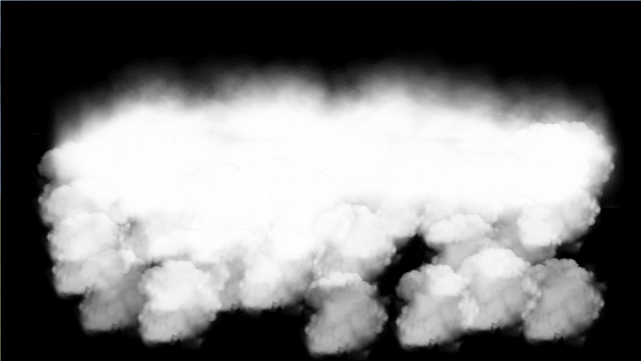
Another limitation of the default point rendering in Processing that we can overcome with a custom point shader is the use of many vertices to represent a single point. We saw that in the case of square points, actually 5 vertices are sent to the GPU per point. In the case of rounds points, this number could be significantly higher since the point circles are approximated with regular polygons of n sides. The number n grows as the point is larger on the screen.
One alternative solution is to generate the points procedurally in the fragment shader. Let's see how to do that in the following example: the points are still sent to the GPU as 5-vertices squares, but then the fragment shader computes which pixels are within the stroke weight distance from the center of the square, making the rest of the pixels transparent, so that the result consists of high-quality round points.
PShader pointShader; void setup() { size(640, 360, P3D); pointShader = loadShader("pointfrag.glsl", "pointvert.glsl"); pointShader.set("sharpness", 0.9); strokeCap(SQUARE); background(0); } void draw() { if (mousePressed) { shader(pointShader, POINTS); float w = random(5, 50); pointShader.set("weight", w); strokeWeight(w); stroke(random(255), random(255), random(255)); point(mouseX, mouseY); } } pointvert.glsl: #define PROCESSING_POINT_SHADER uniform mat4 projection; uniform mat4 transform; attribute vec4 vertex; attribute vec4 color; attribute vec2 offset; varying vec4 vertColor; varying vec2 center; varying vec2 pos; void main() { vec4 clip = transform * vertex; gl_Position = clip + projection * vec4(offset, 0, 0); vertColor = color; center = clip.xy; pos = offset; } pointfrag.glsl: #ifdef GL_ES precision mediump float; precision mediump int; #endif uniform float weight; uniform float sharpness; varying vec4 vertColor; varying vec2 center; varying vec2 pos; void main() { float len = weight/2.0 - length(pos); vec4 color = vec4(1.0, 1.0, 1.0, len); color = mix(vec4(0.0), color, sharpness); color = clamp(color, 0.0, 1.0); gl_FragColor = color * vertColor; } |
We will now look at the line shaders. Lines are drawn by the P3D renderer as a sequence of quads, but these quads need to screen-facing. The method applied to make the quads screen-facing is similar to the one used for points: each line vertex has an associated attribute variable called direction that contains the vector connecting the current point to the opposite point along the quad, as well as the thickness of the line, calculated from the stroke weight. The tangent vector is simply the direction vector normalized, and it is used to compute the offset along the normal direction:
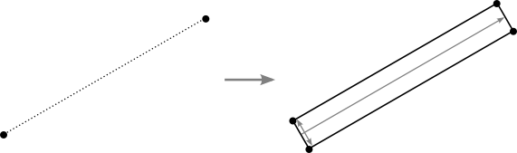
The following sketch simply draws the edges of a box using a simplified version of the default line shader:
PShape cube; PShader lineShader; float angle; float weight = 10; void setup() { size(640, 360, P3D); lineShader = loadShader("linefrag.glsl", "linevert.glsl"); cube = createShape(BOX, 150); cube.setFill(false); cube.setStroke(color(255)); cube.setStrokeWeight(weight); } void draw() { background(0); translate(width/2, height/2); rotateX(angle); rotateY(angle); shader(lineShader, LINES); shape(cube); angle += 0.01; } linevert.glsl: #define PROCESSING_LINE_SHADER uniform mat4 transform; uniform vec4 viewport; attribute vec4 vertex; attribute vec4 color; attribute vec4 direction; varying vec4 vertColor; vec3 clipToWindow(vec4 clip, vec4 viewport) { vec3 dclip = clip.xyz / clip.w; vec2 xypos = (dclip.xy + vec2(1.0, 1.0)) * 0.5 * viewport.zw; return vec3(xypos, dclip.z * 0.5 + 0.5); } void main() { vec4 clip0 = transform * vertex; vec4 clip1 = clip0 + transform * vec4(direction.xyz, 0); float thickness = direction.w; vec3 win0 = clipToWindow(clip0, viewport); vec3 win1 = clipToWindow(clip1, viewport); vec2 tangent = win1.xy - win0.xy; vec2 normal = normalize(vec2(-tangent.y, tangent.x)); vec2 offset = normal * thickness; gl_Position.xy = clip0.xy + offset.xy; gl_Position.zw = clip0.zw; vertColor = color; } linefrag.glsl: #ifdef GL_ES precision mediump float; precision mediump int; #endif varying vec4 vertColor; void main() { gl_FragColor = vertColor; } |
The clipToWindow() function in the vertex shader converts the clip argument to viewport coordinates in pixel units, to make sure that the tangent vector is effectively contained inside the screen. Also note how the position of the opposite point in the line quad is calculated from the current point and the direction vector as:
vec4 clip1 = clip0 + transform * vec4(direction.xyz, 0);
A final example in this section modifies the simple line shader to incorporate transparency to the strokes, in such a way that the alpha value decreases progressively as the pixels move away from the center spine of the stroke:
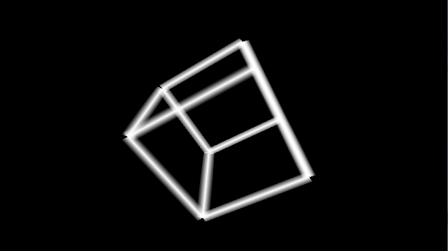
PShape cube; PShader lineShader; float angle; float weight = 20; void setup() { size(640, 360, P3D); lineShader = loadShader("linefrag.glsl", "linevert.glsl"); lineShader.set("weight", weight); cube = createShape(BOX, 150); cube.setFill(false); cube.setStroke(color(255)); cube.setStrokeWeight(weight); hint(DISABLE_DEPTH_MASK); } void draw() { background(0); translate(width/2, height/2); rotateX(angle); rotateY(angle); shader(lineShader, LINES); shape(cube); angle += 0.01; } linevert.glsl: #define PROCESSING_LINE_SHADER uniform mat4 transform; uniform vec4 viewport; attribute vec4 vertex; attribute vec4 color; attribute vec4 direction; varying vec2 center; varying vec2 normal; varying vec4 vertColor; vec3 clipToWindow(vec4 clip, vec4 viewport) { vec3 dclip = clip.xyz / clip.w; vec2 xypos = (dclip.xy + vec2(1.0, 1.0)) * 0.5 * viewport.zw; return vec3(xypos, dclip.z * 0.5 + 0.5); } void main() { vec4 clip0 = transform * vertex; vec4 clip1 = clip0 + transform * vec4(direction.xyz, 0); float thickness = direction.w; vec3 win0 = clipToWindow(clip0, viewport); vec3 win1 = clipToWindow(clip1, viewport); vec2 tangent = win1.xy - win0.xy; normal = normalize(vec2(-tangent.y, tangent.x)); vec2 offset = normal * thickness; gl_Position.xy = clip0.xy + offset.xy; gl_Position.zw = clip0.zw; vertColor = color; center = (win0.xy + win1.xy) / 2.0; } linefrag.glsl: #ifdef GL_ES precision mediump float; precision mediump int; #endif uniform float weight; varying vec2 center; varying vec2 normal; varying vec4 vertColor; void main() { vec2 v = gl_FragCoord.xy - center; float alpha = 1.0 - abs(2.0 * dot(normalize(normal), v) / weight); gl_FragColor = vec4(vertColor.rgb, alpha); } |
The key calculation here is the dot product between the normal vector and the vector from the center of the stroke quad and the current fragment position, dot(normalize(normal), v), which will be exactly 0 along the spine of the quad, and so, giving alpha equal to 1.
The DISABLE_DEPTH_MASK hint in the sketch code is a simple (but not perfect) trick to avoid obvious visual artifacts due to the use of semi-transparent geometry together with alpha blending.
This tutorial is for Processing version 2.0+. If you see any errors or have comments, please let us know.